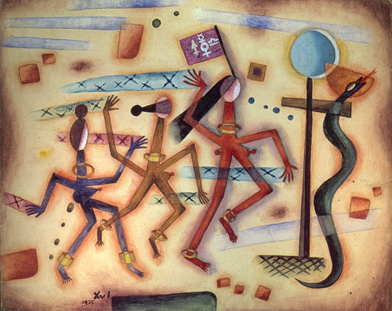

Museo Bellas Artes
El Museo Nacional de Bellas Artes es uno de los más importantes de Latinoamérica y el que tiene la mayor colección de arte argentino del país. Ubicado en el barrio de Recoleta, fue inaugurado en 1896, en un edificio reformado en su momento por el arquitecto Alejandro Bustillo.
Dentro de la colección del museo se destacan obras de El Greco, Goya, Rembrandt, Renoir, Cézanne y Picasso. Entre los pintores argentinos más importantes, posee obras de Cándido López, Benito Quinquela Martín, Xul Solar, Antonio Berni, Carlos Alonso y Antonio Seguí.